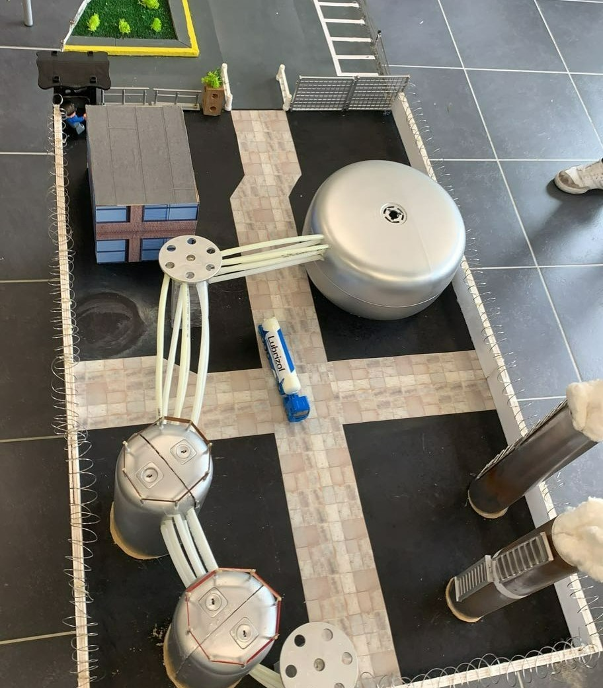

SEMESTRE 4
Voici la liste des SAE que j'ai pu réaliser
lors du Semestre 4 du BUT HSE.
SAÉ 4.01 : Conseiller la direction d'une ICPE dans la réactualisation et la diffusion d'un Plan d'Opération Interne (POI). À l'aide de mes camarades, j'ai pu réaliser le POI de Lubrizol. J'ai donc pu apprendre comment réaliser un POI, pour cela j'ai analysé le contexte et l'environnement de Lubrizol. J'ai également créé un support de communication à travers une maquette (voir image de gauche) réalisée en recyclant des matériaux disponibles à l'IUT. J'ai également réalisé une vidéo en expliquant comment s'est produit un accident fictif à travers la maquette et en indiquant des mesures de sécurité.
SAE 4.02 : Concevoir un plan de gestion des risques liés aux coactivités. Voici mon travail (PDF). Cette SAE m'a permis de comprendre comment réaliser un Plan de Prévention (PDP), il s'applique lorsqu'il y a une coactivité. J'ai dû trouver les informations adaptées à la réalisation de ce PDP, vérifier le corpus documentaire et analyser les risques encourus par les travailleurs. Il me fallait choisir des mesures adaptées à partir d'une analyse des risques que j'ai pu réaliser. J'ai dû réaliser tout cela en essayant de planifier des actions dans la durée. J'ai également appris à mettre en forme ce document à partir des ressources trouvées sur l'INRS.
SAÉ 4.03 : Analyser la politique HSE d'une organisation à partir d'un outil diagnostic. Voici mon travail (Excel). J'ai pu réaliser cet outil pour évaluer la faisabilité de la mise en place de l'ISO 14 001 dans mon entreprise. Ce travail a été utile puisque j'ai créé de A à Z cet outil, donc je saurai le refaire dans une future entreprise. J'ai beaucoup appris sur la norme ISO 14 001 et les normes en général en effectuant mes recherches, j'ai donc une vision plus globale, notamment sur les mesures qu'il faut mettre en place pour obtenir une norme. Ma prochaine mission en entreprise sera justement portée sur une nouvelle norme que la direction veut mettre en place, et cet outil me sera grandement utile.